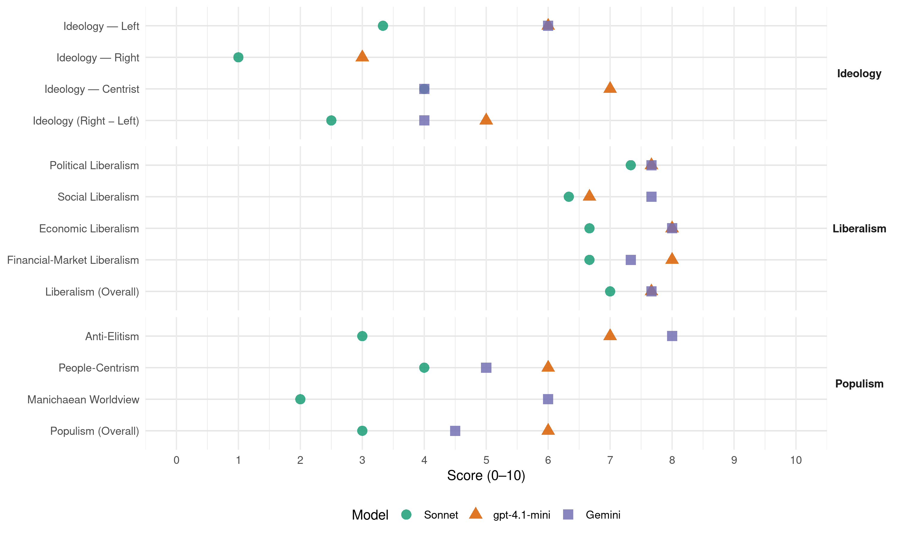

UMC (Panama, 2014)
manifesto_id 160062_201405
Get full text: This site shows derived annotations and short verbatim quotes only. The full manifesto text is © Manifesto Project / WZB — obtain it via manifesto-project.wzb.eu using the manifesto_id above.
Headline scores
| Dimension | Sonnet | gpt-4.1-mini | Gemini |
|---|---|---|---|
| Populism (Overall) | 3.0 | 6.0 | 4.5 |
| Anti-Elitism | 3.0 | 7.0 | 8.0 |
| People-Centrism | 4.0 | 6.0 | 5.0 |
| Manichaean Worldview | 2.0 | – | 6.0 |
| Ideology (Right − Left) | 2.5 | 5.0 | 4.0 |
| Liberalism (Overall) | 7.0 | 7.7 | 7.7 |
| Political Liberalism | 7.3 | 7.7 | 7.7 |
| Social Liberalism | 6.3 | 6.7 | 7.7 |
| Economic Liberalism | 6.7 | 8.0 | 8.0 |
| Financial-Market Liberalism | 6.7 | 8.0 | 7.3 |
Evidence per dimension
Economic Liberalism
Gemini · score 8.0 · verified · chunk 1
“desarrollo de actividades propias del sector privado”
garantizar posteriormente el acceso y desarrollo de actividades propias del sector privado, recomendación ésta que ha
Gemini · score 8.0 · verified · chunk 2
“promover la inversión en la estrategia”
adecuado para promover la inversión en la estrategia de reciclaje país, con una visión
Gemini · score 8.0 · verified · chunk 3
“Incentivaremos al sector privado”
estándar internacional – 1 cada 75 kms). Incentivaremos al sector privado en la construcción de Marinas en las
gpt-4.1-mini · score 8.0 · verified · chunk 1
“crecimiento económico sostenido, medido a través del comportamiento de los principales indicadores macroeconómicos”
El Gobierno Nacional ha mantenido un crecimiento económico sostenido, medido a través del comportamiento de los principales indicadores macroeconómicos, logrando tasas entre las más altas a nivel mundial y la más alta de Latinoamérica en los últimos dos años, a pesar que el mundo se mantenía en plena crisis económica global.
gpt-4.1-mini · score 8.0 · verified · chunk 2
“creación de becas, programas de capacitación y nuevos empleos”
Colaborar con multinacionales y empresas locales para la creación de becas, programas de capacitación y nuevos empleos. Crear economías de escala que permitan al Hub convertirse en el centro de investigaciones más importante de la región. Atraer multinacionales, compañías farmacéuticas y de biotecnología, y otras empresas que requieren del ecosistema que se crearía dentro del Hub para poder establecer centros de operaciones e investigaciones de primer orden.
gpt-4.1-mini · score 8.0 · verified · chunk 3
“Promoveremos el desarrollo de la micro, pequeña y mediana empresa (Mipymes)”
Políticas Públicas adecuadas para las Micro y Pequeñas Empresas: Reconocemos que el sistema y las políticas públicas existentes requieren seguir enfocándose en el desarrollo de más emprendurismo en nuestro país. Promoveremos el desarrollo de la micro, pequeña y mediana empresa (Mipymes), como herramienta para enfrentar la pobreza y creación de empleo, a través de un plan nacional de creación y fortalecimiento de la micro pequeña y mediana empresa, “MIPYMES”,
Sonnet · score 7.0 · verified · chunk 1
“relación Estado y el Sector Privado”
procesos positivos para la relación Estado y el Sector Privado, respetando el valor de la cosa pública y el valor privado
Sonnet · score 7.0 · verified · chunk 2
“libre intercambio de ideas”
Promover un ambiente intelectual basado en compromisos con el libre intercambio de ideas, abierto a la investigación, y promoviendo el emprendimiento
Sonnet · score 6.0 · verified · chunk 3
“Incentivaremos al sector privado en la construcción de Marinas”
Incentivaremos al sector privado en la construcción de Marinas en las áreas costeras de Panamá, para así atraer al gran mercado internacional de yates y mega-yates
Financial-Market Liberalism
Gemini · score 8.0 · verified · chunk 1
“democratización del capital estimulando y ofreciendo”
promover de manera activa el proceso de la democratización del capital estimulando y ofreciendo incentivos a empresas privadas
Gemini · score 7.0 · verified · chunk 2
“acceso al crédito a través de medios”
política de inclusión financiera, ofreciendo el acceso al crédito a través de medios innovadores tales como
Gemini · score 7.0 · verified · chunk 3
“acceso a financiamiento de créditos”
masificación de servicios financieros, acceso a financiamiento de créditos productivo, con metodología microcrédito, el
gpt-4.1-mini · score 8.0 · verified · chunk 1
“sector financiero ya es catalogado como uno de los más competitivos en el mundo”
Una industria clave para el desarrollo económico nacional es la de intermediación financiera. El sector financiero ya es catalogado como uno de los más competitivos en el mundo, pero aún hay mucho trabajo por hacer para cuidar y maximizar esta posición. En nuestro gobierno aceleraremos nuestro trabajo para facilitar la coordinación integral de todas las industrias de servicios financieros del país y así cooperar para explotar oportunidades de generar más valor agregado al país.
Sonnet · score 8.0 · verified · chunk 1
“verdadero Centro Financiero Global”
nos elevaremos de una plaza bancaria regional a un verdadero Centro Financiero Global impulsando la re-integración de reconocidos Bancos Globales
Sonnet · score 6.0 · verified · chunk 2
“acceso a financiamiento de créditos productivo”
Impulsaremos la masificación de servicios financieros, acceso a financiamiento de créditos productivo, con metodología microcrédito, el desarrollo de una política de inclusión financiera
Sonnet · score 6.0 · verified · chunk 3
“acceso a financiamiento de créditos productivo, con metodología microcrédito”
Impulsaremos la masificación de servicios financieros, acceso a financiamiento de créditos productivo, con metodología microcrédito, el desarrollo de una política de inclusión financiera
Political Liberalism
Gemini · score 8.0 · verified · chunk 1
“seguridad jurídica, de pesos y contrapesos”
reglas claras del juego, de seguridad jurídica, de pesos y contrapesos, y por supuesto – de rendición de cuentas.
Gemini · score 8.0 · verified · chunk 2
“deberes inherentes a la ciudadanía”
siempre en cuenta el sentido de los deberes inherentes a la ciudadanía y un compromiso con el aprendizaje
Gemini · score 7.0 · verified · chunk 3
“normativas para un Gobierno Abierto”
leyes de protección de datos personales e introducir normativas para un Gobierno Abierto, logrando un balance entre la protección
gpt-4.1-mini · score 8.0 · verified · chunk 1
“el Poder Público emana del pueblo y lo ejerce el Estado”
Bien lo establece nuestra Constitución, a la que debemos respeto, al indicar que el Poder Público emana del pueblo y lo ejerce el Estado, limitada y separadamente, pero en armónica colaboración entre el Ejecutivo, Legislativo y Judicial.
gpt-4.1-mini · score 8.0 · verified · chunk 2
“compromiso con el aprendizaje, la liberta y la verdad”
Promover un profundo aprecio por las diferencias en opiniones y perspectivas, teniendo siempre en cuenta el sentido de los deberes inherentes a la ciudadanía y un compromiso con el aprendizaje, la liberta y la verdad. Invitaremos al sector privado en la toma de decisiones,creando un esquema UNIVERSIDAD- ESTADO–EMPRESA, que permita la formación y desarrollo de capital humano de excelencia, enfocado en preparar a los estudiantes en áreas de necesidad previamente identificadas, que impactarán la competitividad de nuestro país, la región y el hemisferio hacia un desarrollo sostenible.
gpt-4.1-mini · score 7.0 · verified · chunk 3
“Fortalecimiento del Estado y la Institucionalidad Democrática”
Panamá Más Tecnológico Fortalecimiento del Estado y la Institucionalidad Democrática Entendemos la necesidad de ser transparentes en la gestión de gobierno, de manera que el ciudadano tenga reglas claras respecto a sus derechos y obligaciones en el interactuar ante el Estado. Que las reglas y trámites sean iguales para todos.
Sonnet · score 8.0 · verified · chunk 1
“Garantizar la independencia judicial”
El Programa PANAMA MAS JUSTO pretende: Cumplir con la seguridad jurídica. Garantizar la independencia judicial.
Sonnet · score 7.0 · verified · chunk 2
“derechos humanos, resolución de conflictos”
capacitación y orientación de los agentes en áreas específicas como: derechos humanos, abuso sexual, resolución de conflictos, pedagogía y metodología
Sonnet · score 7.0 · verified · chunk 3
“Fortalecimiento del Estado y la Institucionalidad Democrática”
Panamá Más Tecnológico Fortalecimiento del Estado y la Institucionalidad Democrática Entendemos la necesidad de ser transparentes en la gestión de gobierno
Liberalism (Overall)
Gemini · score 8.0 · verified · chunk 1
“seguridad jurídica, de pesos y contrapesos”
reglas claras del juego, de seguridad jurídica, de pesos y contrapesos, y por supuesto – de rendición de cuentas.
Gemini · score 8.0 · verified · chunk 2
“promoviendo el emprendimiento”
libre intercambio de ideas, abierto a la investigación, y promoviendo el emprendimiento. Proporcionar una amplia
Gemini · score 7.0 · verified · chunk 3
“Incentivaremos al sector privado”
estándar internacional – 1 cada 75 kms). Incentivaremos al sector privado en la construcción de Marinas en las
gpt-4.1-mini · score 8.0 · verified · chunk 1
“crecimiento económico sostenido, medido a través del comportamiento de los principales indicadores macroeconómicos”
El Gobierno Nacional ha mantenido un crecimiento económico sostenido, medido a través del comportamiento de los principales indicadores macroeconómicos, logrando tasas entre las más altas a nivel mundial y la más alta de Latinoamérica en los últimos dos años, a pesar que el mundo se mantenía en plena crisis económica global.
gpt-4.1-mini · score 8.0 · verified · chunk 2
“compromiso con el aprendizaje, la liberta y la verdad”
Promover un profundo aprecio por las diferencias en opiniones y perspectivas, teniendo siempre en cuenta el sentido de los deberes inherentes a la ciudadanía y un compromiso con el aprendizaje, la liberta y la verdad. Invitaremos al sector privado en la toma de decisiones,creando un esquema UNIVERSIDAD- ESTADO–EMPRESA, que permita la formación y desarrollo de capital humano de excelencia, enfocado en preparar a los estudiantes en áreas de necesidad previamente identificadas, que impactarán la competitividad de nuestro país, la región y el hemisferio hacia un desarrollo sostenible.
gpt-4.1-mini · score 7.0 · verified · chunk 3
“Fortalecimiento del Estado y la Institucionalidad Democrática”
Panamá Más Tecnológico Fortalecimiento del Estado y la Institucionalidad Democrática Entendemos la necesidad de ser transparentes en la gestión de gobierno, de manera que el ciudadano tenga reglas claras respecto a sus derechos y obligaciones en el interactuar ante el Estado. Que las reglas y trámites sean iguales para todos.
Sonnet · score 8.0 · verified · chunk 1
“seguridad jurídica, de pesos y contrapesos”
Se trata de tener reglas claras del juego, de seguridad jurídica, de pesos y contrapesos, y por supuesto – de rendición de cuentas.
Sonnet · score 7.0 · verified · chunk 2
“Invitaremos al sector privado en la toma de decisiones”
Invitaremos al sector privado en la toma de decisiones,creando un esquema UNIVERSIDAD- ESTADO–EMPRESA, que permita la formación y desarrollo de capital humano de excelencia
Sonnet · score 6.0 · verified · chunk 3
“Fortalecimiento del Estado y la Institucionalidad Democrática”
Panamá Más Tecnológico Fortalecimiento del Estado y la Institucionalidad Democrática Entendemos la necesidad de ser transparentes en la gestión de gobierno
Anti-Elitism
Gemini · score 8.0 · verified · chunk 1
“acabar con el privilegio de los poderosos”
hacer política, sin acabar con el privilegio de los poderosos que pensaban que estaban muy por encima del resto
gpt-4.1-mini · score 7.0 · verified · chunk 1
“el viejo sistema político que servía sólo a los intereses de una pequeña élite”
No sería posible lograr tanto en tan poco tiempo, sin cambiar la forma de pensar y hacer política, sin acabar con el privilegio de los poderosos que pensaban que estaban muy por encima del resto de las personas, al extremo de que no se molestaban en pagar sus impuestos. El viejo sistema político que servía sólo a los intereses de una pequeña élite, fue eliminado por los vientos del Cambio y así, Panamá dejó atrás ese pasado en el que los ricos se hacían más ricos y los pobres cada vez más pobres.
Sonnet · score 4.0 · verified · chunk 1
“el privilegio de los poderosos que pensaban”
sin acabar con el privilegio de los poderosos que pensaban que estaban muy por encima del resto de las personas
Sonnet · score 1.0 · mixed · chunk 2
“mejorar la distribución de las riquezas”
comprometemos a mantener y mejorarlos con una visión clara orientada hacia de mejorar la distribución de las riquezas y con un enfoque de mayor equidad
Sonnet · score 2.0 · verified · chunk 3
“promesas, proyectos y sobre todo generación de esperanzas que no han sido atendidas”
Desde hace más de 25 años, la Provincia de Colon ha sido eje central de promesas, proyectos y sobre todo generación de esperanzas que no han sido atendidas de la manera correcta.
Ideology — Centrist
Gemini · score 5.0 · verified · chunk 1
“cambios en Todo y para Todos”
asumir la gran responsabilidad de continuar con MÁS cambios en Todo y para Todos. La transformación que hemos
Gemini · score 3.0 · verified · chunk 3
“involucrando a la gente de Colón”
ventajas comparativas y competitivas de Colón. Lo haremos involucrando a la gente de Colón. Lo haremos con una visión de futuro
gpt-4.1-mini · score 7.0 · verified · chunk 1
“unificar esfuerzos para lograr los objetivos nacionales”
Lo hemos logrado, y seguiremos haciéndolo porque somos gente visionaria, incansable, comprometida con nuestra gente, creyentes y promotores del Cambio. Por esto, debemos unificar esfuerzos para lograr los objetivos nacionales. Dirigiremos todo nuestro esfuerzo al servicio de todos los panameños y panameñas, y con tu voto soberano en el 2014, lo alcanzaremos!
Sonnet · score 4.0 · verified · chunk 1
“Más Cambios en Todo y para Todos”
con su experiencia, conocimiento, alto grado de responsabilidad y respeto por las instituciones, realizar Más Cambios en Todo y para Todos
Sonnet · score 4.0 · verified · chunk 3
“Visualizamos manejarlo como una entidad público-privada”
Para sustentar su sostenibilidad, y de mutuo acuerdo con el sector… Visualizamos manejarlo como una entidad público-privada.
Ideology — Left
Gemini · score 6.0 · verified · chunk 1
“mejor distribución del ingreso e inclusión”
nivel de vida de la población. Lograremos una mejor distribución del ingreso e inclusión social. Panamá no se detendrá.
gpt-4.1-mini · score 6.0 · verified · chunk 1
“Lograremos una mejor distribución del ingreso e inclusión social”
Es por esto, que no podemos desviarnos de este camino y éste es el objetivo del Plan de Gobierno Nacional de José Domingo Arias, de Cambio Democrático y del Partido Molinera, denominado “Panamá MÁS”, el cual será debatido con todos los panameños en los próximos meses. Ese Panamá, descontento, insatisfecho e inseguro, ha quedado en el pasado. Es nuestro deber generar valor agregado a este crecimiento, aprovechando esta bonanza económica, dirigiendo las políticas públicas al mejoramiento del nivel de vida de la población. Lograremos una mejor distribución del ingreso e inclusión social.
Sonnet · score 4.0 · verified · chunk 1
“mejor distribución del ingreso e inclusión social”
Lograremos una mejor distribución del ingreso e inclusión social. Panamá no se detendrá.
Sonnet · score 3.0 · verified · chunk 2
“enfoque de mayor equidad”
mejorar la distribución de las riquezas y con un enfoque de mayor equidad. Enfocaremos nuestros esfuerzos en el desarrollo
Sonnet · score 3.0 · verified · chunk 3
“Promoveremos el desarrollo de la micro, pequeña y mediana empresa”
Promoveremos el desarrollo de la micro, pequeña y mediana empresa (Mipymes), como herramienta para enfrentar la pobreza y creación de empleo
Ideology (Right − Left)
Gemini · score 6.0 · verified · chunk 1
“el viejo sistema político que servía”
el viejo sistema político que servía sólo a los intereses de una pequeña élite
Gemini · score 2.0 · verified · chunk 3
“involucrando a la gente de Colón”
ventajas comparativas y competitivas de Colón. Lo haremos involucrando a la gente de Colón. Lo haremos con una visión de futuro
gpt-4.1-mini · score 5.0 · verified · chunk 1
“el viejo sistema político que servía sólo a los intereses de una pequeña élite”
No sería posible lograr tanto en tan poco tiempo, sin cambiar la forma de pensar y hacer política, sin acabar con el privilegio de los poderosos que pensaban que estaban muy por encima del resto de las personas, al extremo de que no se molestaban en pagar sus impuestos. El viejo sistema político que servía sólo a los intereses de una pequeña élite, fue eliminado por los vientos del Cambio y así, Panamá dejó atrás ese pasado en el que los ricos se hacían más ricos y los pobres cada vez más pobres.
Sonnet · score 3.0 · verified · chunk 1
“los ricos se hacían más ricos y los pobres”
Panamá dejó atrás ese pasado en el que los ricos se hacían más ricos y los pobres cada vez más pobres
Sonnet · score 2.0 · mixed · chunk 2
“enfoque de mayor equidad”
mejorar la distribución de las riquezas y con un enfoque de mayor equidad. Enfocaremos nuestros esfuerzos en el desarrollo
Sonnet · score 2.0 · verified · chunk 3
“Visualizamos manejarlo como una entidad público-privada”
Para sustentar su sostenibilidad, y de mutuo acuerdo con el sector… Visualizamos manejarlo como una entidad público-privada.
Ideology — Right
gpt-4.1-mini · score 3.0 · verified · chunk 1
“un Estado fuerte que garantice la igualdad y la justicia”
Se trata de un Estado fuerte que garantice la igualdad y la justicia, de una tierra de oportunidades para todos y no para unos pocos. Creemos en un Órgano Ejecutivo dinámico y desburocratizado para gestionar con eficiencia y transparencia; un Ministerio Público valiente y soberano, que persiga el delito sin tregua, sin distinción de clases ni influencias ajenas; un Órgano Judicial que sea una verdadera herramienta eficaz para la administración de Justicia; y una Asamblea Nacional que legisle por y para el interés y el bienestar de la comunidad, y su continua superación.
Sonnet · score 1.0 · verified · chunk 1
“soberanía depositada en los ciudadanos”
un gobierno estable y con una soberanía depositada en los ciudadanos y expresada por sus representantes
Sonnet · score 1.0 · verified · chunk 2
“controles migratorios más enérgico, efectivos”
nos lleva a recomendar la implementación de controles migratorios más enérgico, efectivos y proactivos, para los próximos cinco (5) años
Manichaean Worldview
Gemini · score 6.0 · verified · chunk 1
“los ricos se hacían más ricos”
dejó atrás ese pasado en el que los ricos se hacían más ricos y los pobres cada vez más pobres.
gpt-4.1-mini · score 5.0 · mixed · chunk 1
“los ricos se hacían más ricos y los pobres cada vez más pobres”
El viejo sistema político que servía sólo a los intereses de una pequeña élite, fue eliminado por los vientos del Cambio y así, Panamá dejó atrás ese pasado en el que los ricos se hacían más ricos y los pobres cada vez más pobres. Ahora Panamá Seguirá Cambiando ¿Cómo mantener el ritmo de crecimiento y la intensidad de los cambios que están haciendo de Panamá un país cada vez mejor?
Sonnet · score 3.0 · verified · chunk 1
“los ricos se hacían más ricos y los pobres”
Panamá dejó atrás ese pasado en el que los ricos se hacían más ricos y los pobres cada vez más pobres
Sonnet · score 1.0 · verified · chunk 3
“esperanzas que no han sido atendidas de la manera correcta”
la Provincia de Colon ha sido eje central de promesas, proyectos y sobre todo generación de esperanzas que no han sido atendidas de la manera correcta.
People-Centrism
Gemini · score 7.0 · verified · chunk 1
“el Poder Público emana del pueblo”
Constitución, a la que debemos respeto, al indicar que el Poder Público emana del pueblo y lo ejerce el Estado
Gemini · score 3.0 · verified · chunk 3
“involucrando a la gente de Colón”
ventajas comparativas y competitivas de Colón. Lo haremos involucrando a la gente de Colón. Lo haremos con una visión de futuro
gpt-4.1-mini · score 6.0 · verified · chunk 1
“somos gente visionaria, incansable, comprometida con nuestra gente”
Lo hemos logrado, y seguiremos haciéndolo porque somos gente visionaria, incansable, comprometida con nuestra gente, creyentes y promotores del Cambio. Por esto, debemos unificar esfuerzos para lograr los objetivos nacionales. Dirigiremos todo nuestro esfuerzo al servicio de todos los panameños y panameñas, y con tu voto soberano en el 2014, lo alcanzaremos!
Sonnet · score 5.0 · verified · chunk 1
“Más Cambios en Todo y para Todos”
continuar con MÁS cambios en Todo y para Todos. La transformación que hemos vivido no tiene paralelos
Sonnet · score 3.0 · verified · chunk 2
“servicio médico que se merecen todos los panameños”
podamos asegurar, a través de las personas y los procedimientos indicados, el servicio médico que se merecen todos los panameños
Sonnet · score 4.0 · verified · chunk 3
“Mi gente está diciendo en las encuestas”
Mi gente está diciendo en las encuestas que el tema es importante así que les aseguro le daré el peso y la importancia.
Populism (Overall)
Gemini · score 7.0 · verified · chunk 1
“el privilegio de los poderosos”
sin acabar con el privilegio de los poderosos que pensaban que estaban muy por encima
Gemini · score 2.0 · verified · chunk 3
“involucrando a la gente de Colón”
ventajas comparativas y competitivas de Colón. Lo haremos involucrando a la gente de Colón. Lo haremos con una visión de futuro
gpt-4.1-mini · score 6.0 · verified · chunk 1
“el viejo sistema político que servía sólo a los intereses de una pequeña élite”
No sería posible lograr tanto en tan poco tiempo, sin cambiar la forma de pensar y hacer política, sin acabar con el privilegio de los poderosos que pensaban que estaban muy por encima del resto de las personas, al extremo de que no se molestaban en pagar sus impuestos. El viejo sistema político que servía sólo a los intereses de una pequeña élite, fue eliminado por los vientos del Cambio y así, Panamá dejó atrás ese pasado en el que los ricos se hacían más ricos y los pobres cada vez más pobres.
Sonnet · score 4.0 · verified · chunk 1
“el privilegio de los poderosos que pensaban”
sin acabar con el privilegio de los poderosos que pensaban que estaban muy por encima del resto de las personas
Sonnet · score 2.0 · mixed · chunk 2
“mejorar la distribución de las riquezas”
comprometemos a mantener y mejorarlos con una visión clara orientada hacia de mejorar la distribución de las riquezas y con un enfoque de mayor equidad
Sonnet · score 2.0 · verified · chunk 3
“Mi gente está diciendo en las encuestas”
Mi gente está diciendo en las encuestas que el tema es importante así que les aseguro le daré el peso y la importancia.
Social Liberalism